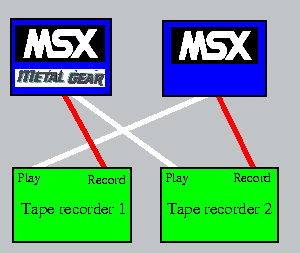

|
In this article Bas Wijnen explains you how you can fool around with the Metal
Gear savegame files. It’s not only useful to learn how to cheat, but the
assembly programmer may learn something from this also.
|
| |
|
|
| |
Directory
How to read a save file?
The location of the data
Write your own save file
A table of values I found
What’s the use?
|
|
|
|
|
| Some values found with the program |
| Position | description |
| #000 | room |
| #001 | energy |
| #002 | rank-1 (0-3) |
| #004 | weapon in hand (not necessarily in inventory) |
| #005 | item in hand (not necessarily in inventory) |
| #006 | previous room (what’s the use of this one?) |
| #007 | maximum energy |
| #008 | radio frequency in BCD |
| #00A | captives counter, rank up at 5 (and counter resets to 0) |
| #012 | Type of bullet in hand (indeed, you can make a SMG bullet hit like a rocket) |
| #020 | Movement type |
| #022 | y coordinate of the player |
| #024 | x coordinate of the player |
| #040 | maximum bullets in BCD, 2 bytes/weapon, LSB first (0-999) |
| #050 | maximum equipment in BCD, 2 bytes/item, LSB first (0-999) |
| #090 | doors. 0 is open, 1 is closed. It is possible to close even lorries. |
| #140 | weapons: 4 bytes per weapon: |
| | +0 = weapon |
| | +1 = ammunition (2 bytes) |
| | +3 = unused |
| #160 | 0 means the weapon is still on the map. 1 mens it isn’t |
| #168 | equipment:4 bytes per item: |
| | +0 = item |
| | +1 = amount (only for rations) (2 bytes) |
| | +1 = character in screen (only for cards) |
| | +3 = unused |
| #1D8 | 0 means the item is still on the map. 1 means it isn’t (some items are on multiple spots) |
| #229 | Shoot gunner. 0 means alive. 1 means dead. 2 means alive with his story told |
|
|
|
|
|
| Movement modes |
| Value | Function |
| 0 | normal |
| 1 | demo (no reaction on controls for a long time, later normal) |
| 2 | in elevator (no up/down, block on left wall) |
| 3 | no movement at all |
| 4 | parachute (straight down) |
| 5 | blowing on the rooftop of building no 1 |
| 6 | no up/down (ladders at the end) |
| 7 | climbing (no left/right) |
|
|
|
|
|
| Weapons |
| Value | Weapon |
| 0 | nothing |
| 1 | handgun |
| 2 | sub machine gun |
| 3 | grenade launcher |
| 4 | rocket launcher |
| 5 | plastic explosives |
| 6 | land mine |
| 7 | remote controlled missile |
| 8 | silencer |
|
|
|
|
|
| Equipment |
| Value | Item |
| 00 | nothing |
| 01 | body armour |
| 02 | bomb blast suit |
| 03 | flashlight |
| 04 | infra red goggles |
| 05 | gasmask |
| 06 | cigarettes |
| 07 | mine detector |
| 08 | antenna |
| 09 | telescope |
| 0A | oxygen cylinder (‘BOMBE’) |
| 0B | compass |
| 0C | parachute |
| 0D | antidote |
| 0E | card 1 |
| 0F | card 2 |
| 10 | card 3 |
| 11 | card 4 |
| 12 | card 5 |
| 13 | card 6 |
| 14 | card 7 |
| 15 | card 8 |
| 16 | ration |
| 17 | transceiver |
| 18 | uniform |
| 19 | cardboard box |
|
|
|
|
|
| |
There are many reasons for people to like computers. Playing games
is one of them for many people. The feeling that you can
finish the game, that you control it and can do everything that is
possible with it, is very nice. Another reason to like computers is
programming. People who like playing with code,
changing it and making new parts to get what they want are called
hackers. (Note the difference with crackers. Crackers are those hackers, who
break through some sort of security with use of their coding skills.)
Cheating has nothing to do with playing games. It’s hacking. If you want
to cheat you have to think from the programmers point of view. Imagine you
coded the program. Would it in any way be possible to
do things that are not meant to be
done? This article describes a method, which can always be used if the
game uses save files. I shall only write about Metal Gear, but the
method is the same for other games.
I shall start with describing the methods for reading save files,
finding the desired data — or actually, the location of the data to be
changed — and writing the files back. I shall finish with some
important locations that I have found.
How to read a save file?
Reading the save file is easy with Metal Gear. The first guess
and hope that it is saved in a standard way seems to be incorrect,
when reading the file from basic doesn’t find an end to it. When you
try reading and writing the data, you will find that it is not
possible to read more than 255 bytes and that writing 255 bytes is not
enough to make a complete save file. This means that, as is usual when
you are hacking, assembly language is needed.
Let’s just stick to the assumption that it is saved in a standard way. If
that is the case — and it seems to be so, since basic can open and read
the first part of the file — then the bios routines can be used to
read it. So let’s try to read the file and store it in memory:
| ML-listing:
READ.ASM |
DB &HFE ;Header to make it a .bin-file
DW &HC000
DW EIND
DW &HC000
RDHDR: EQU &HE1
READ: EQU &HE4
MOTOR: EQU &HF3
CHPUT: EQU &HA2
SIZ1: EQU &H11 ;so it breaks after the name
SIZ2: EQU &H0301 ;metal gear save file length
BUF1: EQU &HCF00
BUF2: EQU &HD000
SIZE1: EQU &HCEFC
SIZE2: EQU &HCEFE
ORG &HC000
CALL RDHDR ;Read first header
DI
LD DE,BUF1
LD HL,SIZ1
LD (MAXSIZ),HL
CALL RDTAP ;Read file-name
LD (SIZE1),HL
;print filename to screen
LD HL,BUF1+10 ;offset:some bytes before actual name
LD B,6
LOOP2: LD A,(HL)
PUSH HL
PUSH BC
CALL CHPUT
POP BC
POP HL
INC HL
DJNZ LOOP2
LD A,13 ;add a return
CALL CHPUT
LD A,10
CALL CHPUT
CALL RDHDR
DI
LD DE,BUF2
LD HL,SIZ2
LD (MAXSIZ),HL
CALL RDTAP
LD (SIZE2),HL
RET
RDTAP: LD HL,0 ;actual tape-reading
LOOP0: PUSH HL
PUSH DE
CALL READ
DI
POP DE
POP HL
JR C,STOP
LD (DE),A
INC DE
INC HL
LD BC,(MAXSIZ)
AND A
PUSH HL
SBC HL,BC
POP HL
JP NZ,LOOP0
STOP: XOR A
PUSH HL
CALL MOTOR
POP HL
RET
EIND:
MAXSIZ: DS 2 ;don't put variables in reserved (saved) memory
|
|
|
But before we can read the data, we need to know how many bytes
we have to read. Just experimenting with SIZE2 gave me &H301.
If you run the program on your save file now, it will provide you with
the data stored in BUF2. It is very easy to save it to disk, you can
just use bsave.
The location of the data
What we want next, is changing the data in a way that it tells that we
have all the
weapons, energy, or something else. To find the location of the data,
we need to make two save files, with only a few differences and
compare them. For example, you make a save file in the elevator. You get
out, fire exactly one shot and go in again, then you compare the two
files. Luckily, the Metal Gear save files are not encryped. If they
were, we had to crack the code as well. But now life is easy. Values that
can be found rather easily are life, inventory, rank, radio frequency,
location etc.
It is possible to check the differeces by hand, but if you have a computer,
you can just as well let it do the work. If you move one save file to &HD400
and another to &HD000, then the following code-fragment does the comparison:
| ML-listing:
CHECK.ASM |
DB &HFE
DW &HC000
DW EIND
DW &HC000
CHPUT: EQU &HA2
BUFFER: EQU &HD000
COPY: EQU &HD400
SIZE: EQU &H0304
ORG &HC000
LD HL,BUFFER
LD DE,COPY
LD BC,SIZE
LOOP0: LD A,(DE) ;check all bytes and print them if not equal
CP (HL)
CALL NZ,PRINT
INC HL
INC DE
DEC BC
LD A,B
OR C
JP NZ,LOOP0
RET
PRINT: LD A,H ;address
CALL PRTHEX
LD A,L
CALL PRTHEX
CALL PRTSPC
LD A,(HL) ;byte 1
CALL PRTHEX
CALL PRTSPC
LD A,(DE) ;byte 2
CALL PRTHEX
PUSH AF
PUSH DE
PUSH BC
PUSH HL
LD A,13 ;return
CALL CHPUT
LD A,10
CALL CHPUT
POP HL
POP BC
POP DE
POP AF
RET
PRTSPC: PUSH AF ;print a space
PUSH BC
PUSH DE
PUSH HL
LD A," "
CALL CHPUT
POP HL
POP DE
POP BC
POP AF
RET
PRTHEX: PUSH HL ;print a byte in hexadecimal
PUSH BC
PUSH DE
PUSH AF
PUSH AF
RLCA
RLCA
RLCA
RLCA
LD B,2
LOOP1: AND &H0F
PUSH BC
ADD A,"0"
CP "0"+10
JR C,SKIP0
ADD A,"A"-"0"-10
SKIP0: CALL CHPUT
POP BC
POP AF
DJNZ LOOP1
POP DE
POP BC
POP HL
RET
EIND:
|
|
|
If you tried to find the room, you probably compared the starting room
and the first elevator and found that more than one byte has changed. One
of them really is the room. Others are the room you came from, position on
the screen and what I call the “movement mode”.
This variable must be there because the allowed movements in the elevator
and in a normal screen are totally different.
Write your own save file
When you write your own save files with data you didn’t find in known
saves, but what you just guessed — where would room 50 be? — don’t be
surprised if you hang the computer. It will never cause any
permanent damage — it’s only software —, the game might just hang.
But that shouldn’t bother you. Just try another value.
Writing the save file must also be done in assembly language, too.
That isn’t really hard anyway, so let’s just do
it:
| ML-listing:
WRITE.ASM |
DB &HFE
DW &HC000
DW EIND
DW &HC000
WRHDR: EQU &HEA
WRITE: EQU &HED
MOTOR: EQU &HF3
BUF1: EQU &HCF00
BUF2: EQU &HD000
SIZE1: EQU &HCEFC ;make sure this is where read has stored them
SIZE2: EQU &HCEFE
ORG &HC000
LD A,1 ;long header
CALL WRHDR
DI
LD HL,BUF1
LD DE,(SIZE1)
CALL WRTAP
XOR A ;short header
CALL WRHDR
DI
LD HL,BUF2
LD DE,(SIZE2)
CALL WRTAP
XOR A
JP MOTOR ;This will return to the caller
WRTAP: PUSH HL
PUSH DE
LD A,(HL)
CALL WRITE
DI
POP DE
POP HL
INC HL
DEC DE
LD A,E
OR D
JP NZ,WRTAP
RET
EIND:
|
|
|
Of course you should use this after you made your changes. If you want
to be able to do it quick and you have two MSXs, you can connect them.
One with the Metal Gear cartridge in it, the other running
the code above or something similar. The signal must be ampilfied, for
the record signal is not strong enough to be recognised by the other MSX.
Just put a tape recorder in
between to amplify the signal. This must not be an official computer
tape recorder like the one Philips made. They don’t output the signal
that they are recording, so that doesn’t work.
 |
| Figure 1:
Connecting two MSXs with tape recorders |
|
|
Set it to record and plug in the white
plug from the Metal Gear computer and the red one from the other. Do
the same with a second tape recorder and the other two plugs. The
‘motor on/off’ plugs don’t need to be connected. All connections are shown
in figure 1. Make sure you give
the load command before you give the save command. Load will wait for
data, while save just starts writing straight away.
A table of values I found
With the above information you should be able to find all the values
yourself, on the left there is a table of some values I found.
What’s the use?
Now the final question: why would you do all this? The
entertainment of the game certainly doesn’t improve by
cheating. Actually, the game is very boring if you cheat. So why would
anyone want to cheat in games? One reason, which goes mostly for
children, is that it is an easy way to finish the game. Just start
with a large inventory in room #76 — where Metal Gear is — and you’ll be
finishing within two minutes. If this was the reason you did it, you
probably never do it again, since you’ll find this is not a very
satisfying way of finishing the game.
A very good reason to do it is what I mentioned at the start. You
really control the game and you can do anything you want in it. That is
what hacking is about in general: controlling the computer. Many
people like playing games for that reason. For those people making a
cheat in a game is fun. Not because they can cheat with it, but
because the making is a puzzle by itself.
|